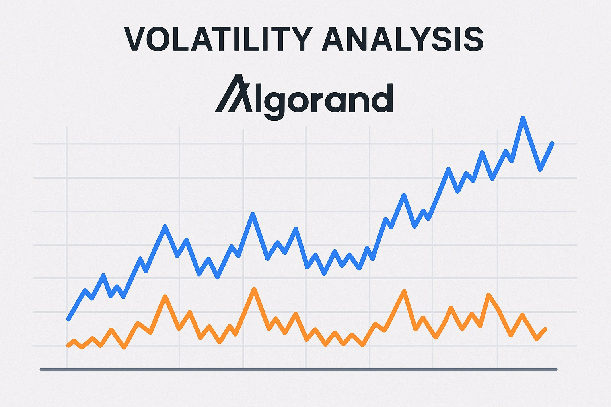

Algorand Price Prediction for End of 2025: In-Depth Analysis and Insights
The information in this article is provided for educational purposes only and is not investment advice. Cryptocurrency investments carry risks.
Introduction
As of August 20, 2025, 01:14 AM EEST, Algorand (ALGO) is trading at approximately $0.45, reinforcing its position as a leading Layer-1 blockchain known for its scalability, security, and eco-friendly design. Founded by Turing Award winner Silvio Micali, Algorand uses a Pure Proof-of-Stake (PPoS) consensus mechanism, enabling fast transactions and low fees while maintaining a carbon-neutral footprint. With applications in DeFi, NFTs, and real-world asset tokenization, Algorand supports a growing ecosystem. This article provides a comprehensive analysis of ALGO’s price outlook for the end of 2025, exploring bullish and bearish scenarios, key growth drivers, and potential risks based on current market trends and ecosystem developments.

Current Situation
As of August 20, 2025, Algorand’s price is around $0.45, reflecting a 15% increase from June 2025, when ALGO traded at $0.39. Over the past 30 days, Algorand has shown moderate resilience, with 52% of days closing in the green and a volatility of 5.1%. The Fear and Greed Index at 62 indicates a greedy market sentiment, driven by Algorand’s growing adoption in DeFi, partnerships with governments and institutions, and advancements like quantum-resistant cryptography. Over the past year, ALGO’s price has risen from $0.28, achieving a 61% gain. Since its launch in 2019 at $0.20, ALGO has grown by 125%, fueled by its scalable infrastructure and focus on sustainability.
Price Predictions for End of 2025
Analyst forecasts for Algorand by December 2025 vary based on market conditions. Bearish scenarios suggest a potential decline to $0.30 if a projected 30–50% market correction occurs in early 2025. Moderate projections estimate ALGO stabilizing between $0.50 and $0.80, supported by steady adoption in DeFi and institutional use cases. Bullish forecasts predict ALGO could reach $1.00–$1.50, particularly if a market rebound occurs between February and April 2025 or if Algorand secures major institutional partnerships. Sources like Coinpedia project a high of $1.25, while DigitalCoinPrice suggests an average of $0.68 for 2025.
Factors Driving Price Growth
- Scalability and Speed: Algorand’s ability to process 6,000 transactions per second with sub-4-second finality attracts developers and enterprises.
- DeFi and NFT Ecosystem: Growing total value locked (TVL) in Algorand’s DeFi protocols and NFT marketplaces boosts ALGO’s utility.
- Institutional Adoption: Partnerships with governments (e.g., El Salvador’s blockchain infrastructure) and institutions enhance Algorand’s credibility.
- Sustainability: Algorand’s carbon-neutral design appeals to environmentally conscious investors and organizations.
- Market Rally: A projected cryptocurrency market surge in 2025, particularly from February to April, could drive ALGO’s price growth.
Risks and Downward Factors
- Market Volatility: A projected 30–50% market correction in early 2025 could exert downward pressure on ALGO’s price, impacting investor sentiment.
- Regulatory Risks: Stricter global regulations on cryptocurrencies could limit Algorand’s accessibility and adoption.
- Competition: Rival Layer-1 blockchains like Ethereum, Solana, and Cardano could challenge Algorand’s market share in DeFi and dApps.
- Adoption Pace: Slower-than-expected institutional or retail adoption could hinder ALGO’s growth potential.
Volatility Analysis
From July to August 2025, Algorand’s price rose from $0.39 to $0.45, marking a 15% gain with a volatility of 5.1%, indicating moderate stability compared to historical trends. Annual growth of 61% underscores ALGO’s strong performance. Technical indicators, including bullish trends in the 50-day and 200-day Exponential Moving Averages (EMAs) and an RSI of 59, suggest continued upward potential. A projected market recovery from February to April 2025 could further support price growth, particularly as Algorand expands its role in DeFi, NFTs, and institutional applications. Its scalable and eco-friendly design positions it well for sustained adoption and value appreciation.
Conclusion
By the end of 2025, Algorand’s price is projected to range between $0.50 and $1.00, with the potential to reach $1.50 in a bullish market driven by scalability, DeFi growth, institutional adoption, and sustainability. However, investors should remain cautious of market volatility, regulatory uncertainties, and competitive pressures. Thorough research and risk management are essential before investing in Algorand.